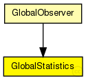

This documentation is released under the Creative Commons license
This documentation is released under the Creative Commons licenseModule to record global statistics

The following diagram shows usage relationships between types. Unresolved types are missing from the diagram. Click here to see the full picture.
The following diagram shows inheritance relationships for this type. Unresolved types are missing from the diagram. Click here to see the full picture.
If a module type shows up more than once, that means it has been defined in more than one NED file.
| GlobalObserver (compound module) |
global module that contains the globalNodeList and the globalStatistics module |
| Name | Type | Default value | Description |
|---|---|---|---|
| outputMinMax | bool |
enable output of minimum and maximum for scalars |
|
| outputStdDev | bool |
enable output of standard deviation for scalars |
|
| measureNetwInitPhase | bool |
fetch statistics in init phase? |
|
| globalStatTimerInterval | double |
interval length of periodic statistic timer |
// // Module to record global statistics // simple GlobalStatistics { parameters: bool outputMinMax; // enable output of minimum and maximum for scalars bool outputStdDev; // enable output of standard deviation for scalars bool measureNetwInitPhase; // fetch statistics in init phase? double globalStatTimerInterval @unit(s); // interval length of periodic statistic timer }
This documentation is released under the Creative Commons license